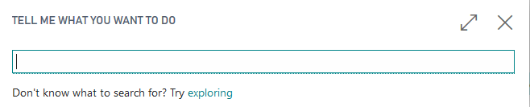
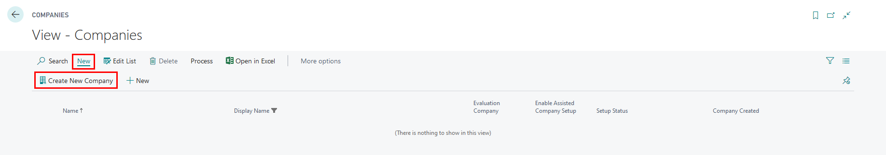
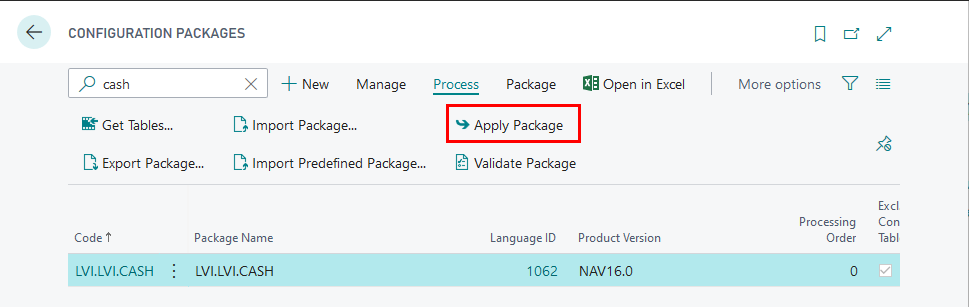
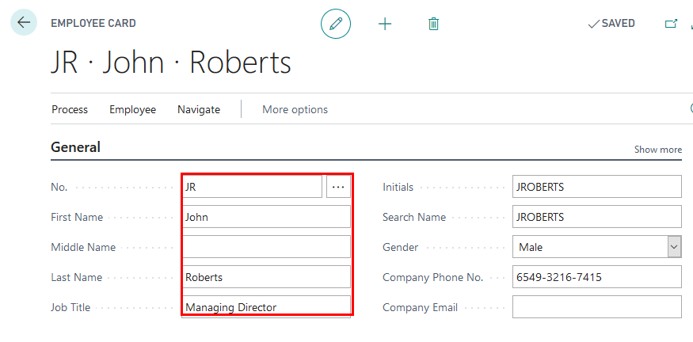
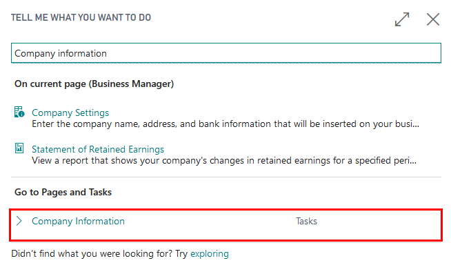
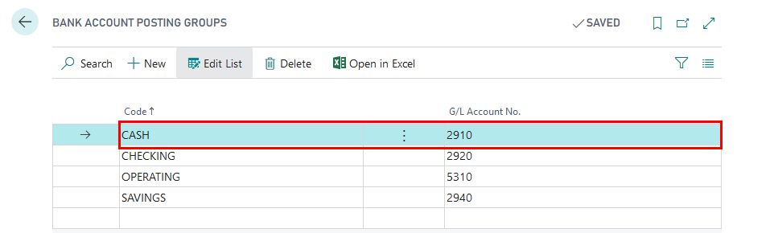
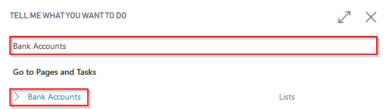
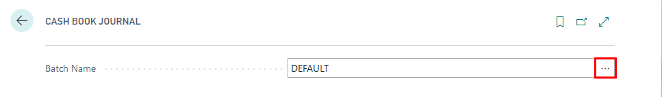

Key Usage Scenarios
Walkthrough: Create evaluation company and import configuration package
About this walkthrough: Configuration package LVI.LVI.CASH is to be imported into an evaluation company, in order to check the setup.
Roles: No specific user roles are required.
Story: You are John Roberts managing director of Cronus International. The company runs business in the sphere of sales of furniture and rendering consultation services related to interior design upon request of local customers. Cronus International is required to carry out transactions with petty cash according to Latvia local requirements. You are assigned to test the settings on an evaluation company before adding the settings into your company.
Availability: can be accessed from Search for Page or Report…
Pre-requisites: No pre-requisites required
Create Evaluation Company
- Click on the button Search for Page or Report... 
- Type Companies and select Companies from Lists
- Press New, select Create New Company, press Next 
- Enter company name, for example, CASH-EVALUATION; set Evaluation-Sample Data in field Select the Data and Setup to Get Started
- Press Next, Next, Finish
- In My Settings, select your evaluation company
Configuration package import
Basic necessary system setup for the use of Latvian Cash Management Localization is created, when applying the configuration package LVI.LVI.CASH .
- Click on the button Search for Page or Report...
- Type Configuration Packages and select Configuration Packages from Lists

- Select LVI.LVI.CASH package from list of Config. Packages and press Apply Package. 
Configuration package ensures the following information:
- General Journal Template (KASESGRAM)
- Source Code (CASHBOOK)
- General Journal Batch (IENEMUMI for cash Incomes, IZDEVUMI for cash payments)
- Source Code Setup
- No.Series (KIO, KZO)
- No.Series Lines (for KIO, KZO)
Walkthrough: How to set up Cash Book Journal batches
About this walkthrough: Cash Income Orders and Cash Payment Orders require to have separate Cash Book Journal batches. Roles: No specific user roles are required. Story: You are John Roberts managing director of Cronus International. The company runs business in the sphere of sales of furniture and rendering consultation services related to interior design upon request of local customers. Cronus International is required to carry out transactions with petty cash according to Latvia local requirements. You are assigned to create cash book journal separate batches for Cash Income Orders and Cash Payment Orders. Prerequisite: The following information should be completed after importing configuration package:
- Review employee card, who is responsible for Petty Cash
- Review Company Information
- Create New Bank Account Card per each Petty Cash location
Review Employee card
Proceed with following detailed steps:
- Click on the button Search for Page or Report...
- Type Employee and select Employees from Pages and Tasks

- Open John Roberts employee card who is responsible for petty cash transactions, in order to review that name, surname, title fields are completed 
Review Company Information
Click on the button Search for Page or Report...
Type Company Information and select Company Information from Pages and Tasks 
Review Company Information is completed:
- Name
- Address -
- Post Code
- Country
- Registration No. - copy the VAT registration number and set it as Registration No.
- VAT Registration No.
Review Bank Account Posting Group for Petty Cash is created
- Click on the button Search for Page or Report...
- Enter Bank Account Posting Groups and then choose the related link.

- Bank account posting group CASH is to be used for petty cash and it has an assigned G/L Account. 
Create New Bank Account Card for Petty Cash
- Click on the button Search for Page or Report...
- Type Bank Accounts and select Bank Accounts from Pages and Tasks 
- Press New, in order to create New Bank Account card per Petty Cash location
- Complete Bank Account Card information with
- No. - CASH
- Name - Petty Cash Riga
- Bank Account Posting Group - CASH
- Account Type- select Cash Desk
- Cashier No.- select AH
- Accountant No. - select JR
Create New Batches for Cash Book Journals
- Click on the button Search for Page or Report...
- Type Cash Book Journals and select Cash Book Journals from Tasks

- Open Cash Book Journal batches 
- Create New Cash Book Journal Batches for Cash Income Orders (IENEMUMI) and create New Cash Book JournalCash Payment Orders (IZDEVUMI)
- Complete Name, Description of new Cash Book Journal Batches
- Review that Balancing Account Type is set to Bank Account,
- Set Balancing Account No. to Bank Account used for Petty Cash - CASH
- Set No. Series per each Cash Book Journal Batch
- KIO for cash income orders
- KZO for cash payment orders